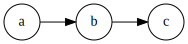
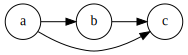
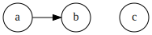
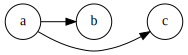

This document provides an overview of the source tree layout and the terminology used in Bazel.
Bazel builds software from source code organized in a directory called a workspace. Source files in the workspace are organized in a nested hierarchy of packages, where each package is a directory that contains a set of related source files and one BUILD file. The BUILD file specifies what software outputs can be built from the source.
A workspace is a directory on your filesystem that contains the
source files for the software you want to build, as well as symbolic links
to directories that contain the build outputs. Each workspace directory has
a text file named WORKSPACE which may be empty, or may contain
references to external dependencies
required to build the outputs.
Directories containing a file called
WORKSPACE are considered the root of a workspace.
Therefore, Bazel ignores any directory trees in a workspace rooted
at a subdirectory containing a WORKSPACE file (as they form
another workspace).
Bazel also supports WORKSPACE.bazel file as an alias of WORKSPACE file.
If both files exist, WORKSPACE.bazel will take the priority.
Code is organized in repositories. The directory containing
the WORKSPACE file is the root of the main repository, also
called @. Other, (external) repositories
are defined in the WORKSPACE file using workspace rules.
The workspace rules bundled with Bazel are documented in the Workspace Rules section in the Build Encyclopedia and the documentation on embeded Starlark repository rules.
As external repositories are repositories themselves, they often contain
a WORKSPACE file as well. However, these additional
WORKSPACE files are ignored by Bazel. In particular,
repositories depended upon transitively are not added automatically.
The primary unit of code organization in a repository is the package. A package is a collection of related files and a specification of the dependencies among them.
A package is defined as a directory containing a file
named BUILD or BUILD.bazel,
residing beneath the top-level directory in the
workspace. A package includes all files in its directory, plus all
subdirectories beneath it, except those which themselves contain a BUILD
file.
For example, in the following directory tree
there are two packages, my/app,
and the subpackage my/app/tests.
Note that my/app/data is not a package, but a directory
belonging to package my/app.
src/my/app/BUILD src/my/app/app.cc src/my/app/data/input.txt src/my/app/tests/BUILD src/my/app/tests/test.cc
A package is a container. The elements of a package are called targets. Most targets are one of two principal kinds, files and rules. Additionally, there is another kind of target, package groups, but they are far less numerous.
Files are further divided into two kinds. Source files are usually written by the efforts of people, and checked in to the repository. Generated files, sometimes called derived files, are not checked in, but are generated by the build tool from source files according to specific rules.
The second kind of target is the rule. A rule specifies the relationship between a set of input and a set of output files, including the necessary steps to derive the outputs from the inputs. The outputs of a rule are always generated files. The inputs to a rule may be source files, but they may be generated files also; consequently, outputs of one rule may be the inputs to another, allowing long chains of rules to be constructed.
Whether the input to a rule is a source file or a generated file is in most cases immaterial; what matters is only the contents of that file. This fact makes it easy to replace a complex source file with a generated file produced by a rule, such as happens when the burden of manually maintaining a highly structured file becomes too tiresome, and someone writes a program to derive it. No change is required to the consumers of that file. Conversely, a generated file may easily be replaced by a source file with only local changes.
The inputs to a rule may also include other rules. The precise meaning of such relationships is often quite complex and language- or rule-dependent, but intuitively it is simple: a C++ library rule A might have another C++ library rule B for an input. The effect of this dependency is that B's header files are available to A during compilation, B's symbols are available to A during linking, and B's runtime data is available to A during execution.
An invariant of all rules is that the files generated by a rule always belong to the same package as the rule itself; it is not possible to generate files into another package. It is not uncommon for a rule's inputs to come from another package, though.
Package groups are sets of packages whose purpose is to limit accessibility
of certain rules. Package groups are defined by the
package_group function. They have two properties: the list of
packages they contain and their name. The only allowed ways to refer to them
are from the visibility attribute of rules or from the
default_visibility attribute of the package
function; they do not generate or consume files. For more information, refer
to the appropriate section of the Build Encyclopedia.
All targets belong to exactly one package. The name of a target is called its label, and a typical label in canonical form looks like this:
@myrepo//my/app/main:app_binary
In the typical case that a label refers to the same repository it occurs
in, the repository name may be left out. So, inside @myrepo
this label is usually written as
//my/app/main:app_binary
Each label has two parts, a package name (my/app/main)
and a target name (app_binary). Every label uniquely
identifies a target. Labels sometimes appear in other forms; when
the colon is omitted, the target name is assumed to be the same as
the last component of the package name, so these two labels are
equivalent:
//my/app //my/app:app
Short-form labels such as //my/app are not to
be confused with package names. Labels start with //,
but package names never do, thus my/app is the
package containing //my/app.
(A common misconception is that //my/app refers
to a package, or to all the targets in a package; neither
is true.)
Within a BUILD file, the package-name part of label may be omitted,
and optionally the colon too. So within the BUILD file for package
my/app (i.e. //my/app:BUILD),
the following "relative" labels are all equivalent:
//my/app:app //my/app :app app
(It is a matter of convention that the colon is omitted for files, but retained for rules, but it is not otherwise significant.)
Similarly, within a BUILD file, files belonging to the package may be referenced by their unadorned name relative to the package directory:
generate.cc testdata/input.txt
But from other packages, or from the command-line, these file
targets must always be referred to by their complete label, e.g.
//my/app:generate.cc.
Relative labels cannot be used to refer to targets in other
packages; the complete package name must always be specified in this
case. For example, if the source tree contains both the package
my/app and the package
my/app/testdata (i.e., each of these two
packages has its own BUILD file). The latter package contains a
file named testdepot.zip. Here are two ways (one
wrong, one correct) to refer to this file within
//my/app:BUILD:
testdata/testdepot.zip # Wrong: testdata is a different package.
//my/app/testdata:testdepot.zip # Right.
If, by mistake, you refer to testdepot.zip by the wrong
label, such as //my/app:testdata/testdepot.zip
or //my:app/testdata/testdepot.zip, you will get an
error from the build tool saying that the label "crosses a package
boundary". You should correct the label by putting the colon after
the directory containing the innermost enclosing BUILD file, i.e.,
//my/app/testdata:testdepot.zip.
Labels starting with @// are references to the main
repository, which will still work even from external repositories.
Therefore @//a/b/c is different from
//a/b/c when referenced from an external repository.
The former refers back to the main repository, while the latter
looks for //a/b/c in the external repository itself.
This is especially relevant when writing rules in the main
repository that refer to targets in the main repository, and will be
used from external repositories.
The syntax of labels is intentionally strict, so as to forbid metacharacters that have special meaning to the shell. This helps to avoid inadvertent quoting problems, and makes it easier to construct tools and scripts that manipulate labels, such as the Bazel Query Language. The precise details of allowed target names are below.
//...:target-nametarget-name is the name of the target within the package.
The name of a rule is the value of the name
attribute in the rule's declaration in a BUILD file; the name
of a file is its pathname relative to the directory containing
the BUILD file.
Target names must be composed entirely of
characters drawn from the set a–z,
A–Z, 0–9,
and the punctuation symbols !%-@^_` "#$&'()*-+,;<=>?[]{|}~/..
Do not use .. to refer to files in other packages; use
//packagename:filename instead.
Filenames must be relative pathnames in normal form, which means
they must neither start nor end with a slash
(e.g. /foo and foo/ are forbidden) nor
contain multiple consecutive slashes as path separators
(e.g. foo//bar). Similarly, up-level references
(..) and current-directory references
(./) are forbidden. The sole exception to this
rule is that a target name may consist of exactly
'.'.
While it is common to use / in the name of a file
target, we recommend that you avoid the use of / in the
names of rules. Especially when the shorthand form of a label is
used, it may confuse the reader. The
label //foo/bar/wiz is always a shorthand
for //foo/bar/wiz:wiz, even if there is no such package
foo/bar/wiz; it never refers to //foo:bar/wiz,
even if that target exists.
However, there are some situations where use of a slash is convenient, or sometimes even necessary. For example, the name of certain rules must match their principal source file, which may reside in a subdirectory of the package.
//package-name:...
The name of a package is the name of the directory containing its
BUILD file, relative to the top-level directory of the source tree.
For example: my/app.
Package names must be composed entirely of characters drawn from
the set A-Z, a–z,
0–9, '/', '-',
'.', and '_', and cannot start with
a slash.
For a language with a directory structure that is significant to its module system (e.g. Java), it is important to choose directory names that are valid identifiers in the language.
Although Bazel allows a package at the build root (e.g. //:foo), this
is not advised and projects should attempt to use more descriptively named
packages.
Package names may not contain the substring //, nor
end with a slash.
A rule specifies the relationship between inputs and outputs, and the steps to build the outputs. Rules can be of one of many different kinds or classes, which produce compiled executables and libraries, test executables and other supported outputs as described in the Build Encyclopedia.
Every rule has a name, specified by the name attribute,
of type string. The name must be a syntactically valid target name,
as specified above. In some cases, the name is
somewhat arbitrary, and more interesting are the names of the files
generated by the rule; this is true of genrules. In other
cases, the name is significant: for *_binary
and *_test rules, for example, the rule name determines
the name of the executable produced by the build.
cc_binary(
name = "my_app",
srcs = ["my_app.cc"],
deps = [
"//absl/base",
"//absl/strings",
],
)
Every rule has a set of attributes; the applicable attributes for a given rule, and the significance and semantics of each attribute are a function of the rule's class; see the Build Encyclopedia for a list of rules and their corresponding attributes. Each attribute has a name and a type. Some of the common types an attribute can have are integer, label, list of labels, string, list of strings, output label, list of output labels. Not all attributes need to be specified in every rule. Attributes thus form a dictionary from keys (names) to optional, typed values.
The srcs attribute present in many rules has type "list
of labels"; its value, if present, is a list of labels, each being
the name of a target that is an input to this rule.
The outs attribute present in many rules has type "list
of output labels"; this is similar to the type of
the srcs attribute, but differs in two significant
ways. Firstly, due to the invariant that the outputs of a rule
belong to the same package as the rule itself, output labels cannot
include a package component; they must be in one of the "relative"
forms shown above. Secondly, the relationship implied by an
(ordinary) label attribute is inverse to that implied by an output
label: a rule depends on its srcs, whereas a rule is
depended on by its outs. The two types of label attributes
thus assign direction to the edges between targets, giving rise to a
dependency graph.
This directed acyclic graph over targets is called the "target graph" or "build dependency graph", and is the domain over which the Bazel Query tool operates.
The previous section described packages, targets and labels, and the build dependency graph abstractly. In this section, we'll look at the concrete syntax used to define a package.
By definition, every package contains a BUILD file, which is a short program. BUILD files are evaluated using an imperative language, Starlark. They are interpreted as a sequential list of statements.
In general, order does matter: variables must be defined before they are used, for
example. However, most BUILD files consist only of declarations of
build rules, and the relative order of these statements is
immaterial; all that matters is which rules were declared,
and with what values, by the time package evaluation completes.
When a build rule function, such as cc_library, is
executed, it creates a new target in the graph. This target can later be
referred using a label.
So, in simple BUILD files, rule declarations can be re-ordered
freely without changing the behavior.
To encourage a clean separation between code and data, BUILD files cannot
contain function definitions, for statements or
if statements (but list comprehensions and if
expressions are allowed). Functions should be declared in .bzl
files instead. Additionally, *args and **kwargs
arguments are not allowed in BUILD files; instead list all the arguments
explicitly.
Crucially, programs in Starlark are unable to perform arbitrary I/O. This invariant makes the interpretation of BUILD files hermetic, i.e. dependent only on a known set of inputs, which is essential for ensuring that builds are reproducible.
BUILD files should be written using only ASCII characters, although technically they are interpreted using the Latin-1 character set.
Since BUILD files need to be updated whenever the dependencies of the underlying code change, they are typically maintained by multiple people on a team. BUILD file authors are encouraged to use comments liberally to document the role of each build target, whether or not it is intended for public use, and to document the role of the package itself.
.bzl. Use
the load statement to import a symbol from an extension.
load("//foo/bar:file.bzl", "some_library")
This code will load the file foo/bar/file.bzl and add the
some_library symbol to the environment. This can be used to load
new rules, functions or constants (e.g. a string, a list, etc.). Multiple
symbols can be imported by using additional arguments to the call
to load. Arguments must be string literals (no variable)
and load statements must appear at top-level, i.e. they cannot be
in a function body.
The first argument of load is a label
identifying a .bzl file. If it is a relative label, it is resolved
with respect to the package (not directory) containing the current
bzl file. Relative labels in load statements should
use a leading :.
load also supports aliases, i.e. you can assign different names to
the imported symbols.
load("//foo/bar:file.bzl", library_alias = "some_library")
You can define multiple aliases within one load statement.
Moreover, the argument list can contain both aliases and regular symbol names.
The following example is perfectly legal (please note when to use quotation
marks).
load(":my_rules.bzl", "some_rule", nice_alias = "some_other_rule")
In a .bzl file, symbols starting with _ are not
exported and cannot be loaded from another file. Visibility doesn't affect
loading (yet): you don't need to use exports_files to make
a .bzl file visible.
The majority of build rules come in families, grouped together by
language. For
example, cc_binary, cc_library
and cc_test are the build rules for C++ binaries,
libraries, and tests, respectively. Other languages use the same
naming scheme, with a different prefix, e.g. java_* for
Java. Some of these functions are documented in the
Build Encyclopedia, but it is possible
for anyone to create new rules.
*_binary
rules build executable programs in a given language. After a
build, the executable will reside in the build tool's binary
output tree at the corresponding name for the rule's label,
so //my:program would appear at
(e.g.) $(BINDIR)/my/program.
Such rules also create a runfiles directory
containing all the files mentioned in a data
attribute belonging to the rule, or any rule in its transitive
closure of dependencies; this set of files is gathered together in
one place for ease of deployment to production.
*_test
rules are a specialization of a *_binary rule, used for automated
testing. Tests are simply programs that return zero on success.
Like binaries, tests also have runfiles trees, and the files
beneath it are the only files that a test may legitimately open
at runtime. For example, a program cc_test(name='x',
data=['//foo:bar']) may open and
read $TEST_SRCDIR/workspace/foo/bar during execution.
(Each programming language has its own utility function for
accessing the value of $TEST_SRCDIR, but they are all
equivalent to using the environment variable directly.)
Failure to observe the rule will cause the test to fail when it is
executed on a remote testing host.
*_library
rules specify separately-compiled modules in the given
programming language. Libraries can depend on other libraries,
and binaries and tests can depend on libraries, with the expected
separate-compilation behavior.
A target A depends upon a target
B if B is needed by A at
build or execution time. The depends upon relation induces a
Directed
Acyclic Graph (DAG) over targets, and we call this a
dependency graph.
A target's direct dependencies are those other targets
reachable by a path of length 1 in the dependency graph. A target's
transitive dependencies are those targets upon which it
depends via a path of any length through the graph.
In fact, in the context of builds, there are two dependency graphs, the graph of actual dependencies and the graph of declared dependencies. Most of the time, the two graphs are so similar that this distinction need not be made, but it is useful for the discussion below.
A target X is actually dependent on target
Y if and only if Y must be present, built
and up-to-date in order for X to be built correctly.
"Built" could mean generated, processed, compiled, linked,
archived, compressed, executed, or any of the other kinds of tasks
that routinely occur during a build.
A target X has a declared dependency on target
Y if and only if there is a dependency edge from X
to Y in the package of X.
For correct builds, the graph of actual dependencies A must
be a subgraph of the graph of declared dependencies D. That
is, every pair of directly-connected nodes x --> y
in A must also be directly connected in D. We say
D is an overapproximation of A.
It is important that it not be too much of an overapproximation, though, since redundant declared dependencies can make builds slower and binaries larger.
What this means for BUILD file writers is that every rule must explicitly declare all of its actual direct dependencies to the build system, and no more. Failure to observe this principle causes undefined behavior: the build may fail, but worse, the build may depend on some prior operations, or upon which transitive declared dependencies the target happens to have. The build tool attempts aggressively to check for missing dependencies and report errors, but it is not possible for this checking to be complete in all cases.
You need not (and should not) attempt to list everything indirectly imported, even if it is "needed" by A at execution time.
During a build of target X, the build tool inspects the
entire transitive closure of dependencies of X to ensure that
any changes in those targets are reflected in the final result,
rebuilding intermediates as needed.
The transitive nature of dependencies leads to a common mistake. Through careless programming, code in one file may use code provided by an indirect dependency, i.e. a transitive but not direct edge in the declared dependency graph. Indirect dependencies do not appear in the BUILD file. Since the rule doesn't directly depend on the provider, there is no way to track changes, as shown in the following example timeline:
1. At first, everything works
The code in package a uses code in package b.
The code in package b uses code in package c,
and thus a transitively depends on c.
a/BUILD
rule(
name = "a",
srcs = "a.in",
deps = "//b:b",
)
a/a.in
import b; b.foo();
b/BUILD
rule(
name = "b",
srcs = "b.in",
deps = "//c:c",
)
b/b.in
import c;
function foo() {
c.bar();
}
|

Declared dependency graph |
Actual dependency graph |
2. A latent hazard is introduced.
Someone carelessly adds code to a that creates a direct
actual dependency on c, but forgets to declare it.
a/a.in
import b; import c; b.foo(); c.garply();
|
Declared dependency graph |

Actual dependency graph |
a has an
actual but undeclared dependency on c.
3. The hazard is revealed
Someone refactors b so that it no longer depends on
c, inadvertently breaking a through no
fault of their own.
b/BUILD
rule(
name = "b",
srcs = "b.in",
deps = "//d:d",
)
b/b.in
import d;
function foo() {
d.baz();
}
|

Declared dependency graph |

Actual dependency graph |
The declared dependency graph is now an underapproximation of the
actual dependencies, even when transitively closed; the build is
likely to fail.
The problem could have been averted by ensuring that the actual
dependency from a to c introduced in Step
2 was properly declared in the BUILD file.
Most build rules have three attributes for specifying different kinds
of generic dependencies: srcs, deps and
data. These are explained below. See also
Attributes common
to all rules in the Build Encyclopedia.
Many rules also have additional attributes for rule-specific kinds
of dependency, e.g. compiler, resources,
etc. These are detailed in the Build Encyclopedia.
srcs dependenciesFiles consumed directly by the rule or rules that output source files.
deps dependenciesRule pointing to separately-compiled modules providing header files, symbols, libraries, data, etc.
data dependenciesA build target might need some data files to run correctly. These data files aren't source code: they don't affect how the target is built. For example, a unit test might compare a function's output to the contents of a file. When we build the unit test, we don't need the file; but we do need it when we run the test. The same applies to tools that are launched during execution.
The build system runs tests in an isolated directory where only files listed as "data" are available. Thus, if a binary/library/test needs some files to run, specify them (or a build rule containing them) in data. For example:
# I need a config file from a directory named env:
java_binary(
name = "setenv",
...
data = [":env/default_env.txt"],
)
# I need test data from another directory
sh_test(
name = "regtest",
srcs = ["regtest.sh"],
data = [
"//data:file1.txt",
"//data:file2.txt",
...
],
)
These files are available using the relative path
path/to/data/file. In tests, it is also possible to refer to
them by joining the paths of the test's source directory and the workspace-relative
path, e.g.
${TEST_SRCDIR}/workspace/path/to/data/file.
As you look over our BUILD files, you might notice
that some data labels refer to directories.
These labels end with /. or / like so:
data = ["//data/regression:unittest/."] # don't use this
or like so:
data = ["testdata/."] # don't use this
or like so:
data = ["testdata/"] # don't use this
This seems convenient, particularly for tests (since it allows a test to use all the data files in the directory).
But try not to do this. In order to ensure correct incremental rebuilds (and
re-execution of tests) after a change, the build system must be
aware of the complete set of files that are inputs to the build (or
test). When you specify a directory, the build system will perform
a rebuild only when the directory itself changes (due to addition or
deletion of files), but won't be able to detect edits to individual
files as those changes do not affect the enclosing directory.
Rather than specifying directories as inputs to the build system,
you should enumerate the set of files contained within them, either
explicitly or using the
glob() function.
(Use ** to force the
glob() to be recursive.)
data = glob(["testdata/**"]) # use this instead
Unfortunately, there are some scenarios where directory labels must be used.
For example, if the testdata directory contains files whose
names do not conform to the strict label syntax
(e.g. they contain certain punctuation symbols), then explicit
enumeration of files, or use of the
glob() function will
produce an invalid labels error. You must use directory labels in this case,
but beware of the concomitant risk of incorrect rebuilds described above.
If you must use directory labels, keep in mind that you can't refer to the parent
package with a relative "../" path; instead, use an absolute path like
"//data/regression:unittest/.".
Note that directory labels are only valid for data dependencies. If you try to use
a directory as a label in an argument other than data, it
will fail and you will get a (probably cryptic) error message.